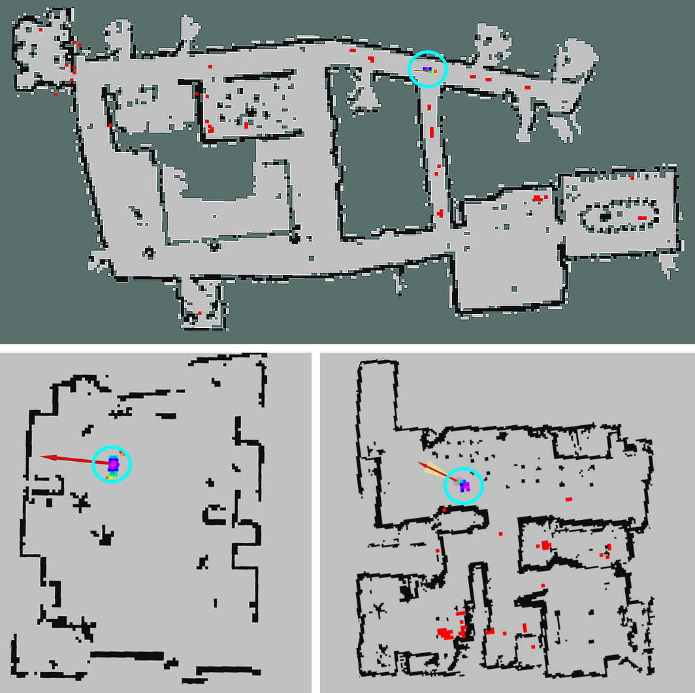

ICRA 2026 · acceptance rate 38.04%
Lifelong Localization in Dynamic Indoor Environments: Combining Odometry with Sparse Distance Sampling
SLAM-comparable localization in dynamic indoor spaces using odometry and only 16 sparse distance measurements — no full LiDAR required.